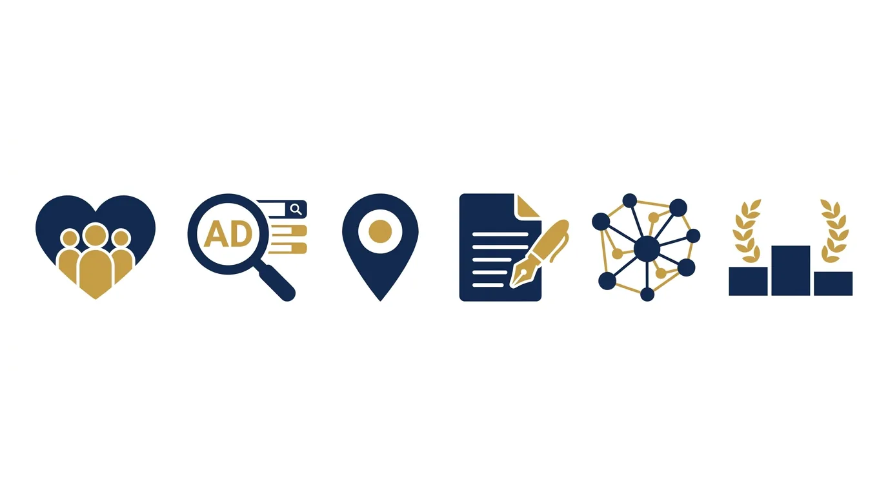

Prospecção de Clientes na Advocacia: O que a OAB Permite
Todo advogado conhece o dilema. De um lado, o escritório precisa de clientes novos como qualquer negócio, e esperar sentado não paga boleto. De outro, a palavra "prospecção" carrega, na advocacia, um cheiro de infração: todo mundo já ouviu que "advogado não pode captar cliente". O medo de uma representação faz muita banca ficar parada enquanto a concorrência cresce.
O dilema é falso, e este artigo existe para desmontá-lo. A OAB não proíbe o crescimento: proíbe um jeito específico de crescer. Entre a captação vedada e a passividade total existe um campo enorme de prospecção de clientes legítima, e é exatamente nele que operam os escritórios que mais crescem no país.
Nas próximas seções: o que o Provimento 205/2021 realmente veda, a diferença entre abordar e atrair, as estratégias permitidas em ordem de eficácia e os erros que transformam marketing legítimo em processo disciplinar.
Um dado de contexto ajuda a dimensionar o que está em jogo: o Brasil tem mais de um milhão de advogados inscritos, e a maioria disputa clientes nas mesmas cidades, com os mesmos serviços, esperando as mesmas indicações. Nesse cenário, ficar invisível não é neutralidade: é entregar mercado para quem se estruturou. A prospecção de clientes bem feita não torna ninguém menos advogado; torna a competência encontrável, que é exatamente o que a publicidade informativa da OAB existe para permitir.
O que a OAB realmente proíbe
O Provimento 205/2021 organizou de vez a publicidade na advocacia. A leitura dele derruba dois mitos simétricos: o de que nada pode e o de que agora tudo pode.
O que a norma veda, em essência, é a captação indevida e a mercantilização: tratar a advocacia como mercadoria de balcão. Na lista prática do proibido estão a promessa de resultado, a divulgação de valores de honorários como isca comercial e o uso de casos concretos para se promover. Também entram a abordagem direta de quem acabou de sofrer um dano para oferecer serviços e a publicidade em situação que constranja o destinatário.
O que a norma permite, com nome e sobrenome, é a publicidade informativa: conteúdo educativo, presença profissional nas redes, site, identificação de áreas de atuação e até anúncios pagos. A modalidade alinhada é a que responde ao interesse de quem já busca (como os anúncios de pesquisa do Google), sempre com sobriedade e sem promessas.
| Conduta | Situação perante a OAB |
|---|---|
| Publicar conteúdo educativo sobre sua área | Permitido e incentivado |
| Anunciar no Google para quem pesquisa o problema | Permitido, com as balizas do provimento |
| Manter site e perfis profissionais informativos | Permitido |
| Prometer resultado ou "garantia de êxito" | Vedado |
| Divulgar honorários em anúncio como chamariz | Vedado |
| Abordar vítimas de acidente ou familiares oferecendo serviços | Vedado (captação indevida) |
| Comprar listas e disparar mensagens oferecendo serviços | Vedado |
| Pagar comissão a quem indica clientes | Vedado |
A linha que organiza tudo cabe numa frase: o cliente pode vir até você por qualquer porta que você construir; você não pode ir até ele empurrando a porta. Atrair é lícito; abordar oferecendo serviço é o coração da vedação.
Atenção: a responsabilidade pela publicidade é do advogado, inclusive pela que terceiros fazem em seu nome. Parceiro comercial que "agencia" clientes, influenciador que promete resultado no seu nome, site que vende contatos de potenciais clientes (os chamados "leads") como "casos prontos": tudo isso responde na sua inscrição. Desconfie de qualquer atalho que dependa de outra pessoa fazer por você o que você não poderia fazer.
Antes da mudança de mentalidade, um parêntese sobre o mercado B2B, porque advogado empresarial costuma perguntar se as regras são outras. Não são: a vedação de abordagem captatória vale para pessoa física e jurídica. O que muda é a paisagem dos canais, com LinkedIn, eventos setoriais e relacionamento institucional ganhando peso, e o conteúdo migrando de "quais os meus direitos" para análises que o gestor da empresa compartilha internamente. A lógica de atrair pela autoridade, em vez de abordar pela oferta, é idêntica; muda o palco e o vocabulário.
Abordar × atrair: a mudança de mentalidade
A prospecção de clientes tradicional, de vendedor, é ativa: lista de contatos, abordagem, oferta. É esse modelo que a advocacia veda. O que funciona no direito é o inverso, e a boa notícia é que o inverso rende mais em serviços de confiança.
Pense em como as pessoas contratam advogado. Ninguém decide processar alguém porque recebeu uma mensagem fria; a pessoa sente o problema, pesquisa, pergunta a conhecidos, compara, e só então contrata quem pareceu mais confiável. A prospecção de clientes na advocacia consiste em estar presente, com autoridade, em cada ponto desse caminho: na pesquisa do Google, na recomendação do colega, no conteúdo que respondeu à primeira dúvida.
Isso muda o vocabulário do jogo. Em vez de "quantas abordagens fiz", a pergunta vira "quantas portas de entrada eu construí". E portas de entrada se constroem em camadas:
- Ser encontrado: aparecer nas buscas do Google, pagando (anúncios de pesquisa) ou organicamente (o chamado SEO, a otimização para buscadores);
- Ser lembrado: conteúdo constante, redes sociais, relacionamento com clientes antigos (a sua base);
- Ser recomendado: experiência do cliente, rede de parceiros, comunidade.
Nenhuma das camadas exige abordar quem não pediu. Todas exigem método, e juntas formam o funil de captação: o caminho que leva alguém de conhecer seu nome a contratar você.
As estratégias que funcionam, em ordem de retorno
O cardápio permitido é grande. A ordem abaixo reflete o que vemos funcionar em escritórios reais, do retorno mais rápido ao mais estrutural.
1. Base atual e indicações organizadas. O cliente mais barato é o que você já atendeu. Rotina de pós-atendimento, pedidos de avaliação no Google, contato periódico com ex-clientes e parceiros: a indicação espontânea vira sistema quando alguém cuida dela, como mostramos no guia de experiência do cliente e indicações. Atenção à regra: agradecer indicação pode; pagar comissão por ela, não.
2. Anúncios de pesquisa. Quem digita "advogado trabalhista perto de mim" já decidiu procurar; o anúncio só disputa qual porta essa pessoa abre. É a modalidade paga mais alinhada ao provimento e a de retorno mais rápido, com as técnicas do nosso guia de Google Ads para advogados.
3. SEO e presença local. O trabalho de aparecer nas pesquisas sem pagar por clique: conteúdo otimizado, SEO local, perfil da empresa no Google com avaliações. Demora meses para engrenar e depois vira o canal de melhor custo por cliente da operação.
4. Conteúdo de autoridade. Artigos, vídeos e posts que respondem às dúvidas do seu cliente ideal. Além de alimentar o SEO e as redes, o conteúdo faz a pré-venda silenciosa: o cliente chega à reunião já confiando, e a conversa de honorários muda de tom. O caminho completo está no nosso guia de marketing de conteúdo na advocacia.
5. Comunidade e parcerias profissionais. Contadores, corretores, médicos, síndicos, outros advogados de áreas complementares: quem atende o seu cliente ideal em outra necessidade é fonte natural de indicação qualificada. Networking estruturado, do jeito que descrevemos no guia para ser notado, rende mais que evento aleatório com troca de cartões.
6. Palestras, aulas e imprensa. Autoridade pública emprestada: o palco valida quem sobe nele. Aula em curso preparatório, palestra em associação de bairro ou sindicato, fonte de jornalista em matéria da sua área. Cada aparição alimenta as outras camadas.
A escolha entre elas depende de nicho, verba e fase da banca, e o erro clássico é pulverizar: fazer um pouco de tudo, mal, em vez de dominar dois canais e escalar a partir deles.

O sistema mínimo em 90 dias
Para sair da teoria, o plano de implantação que cabe em um trimestre de qualquer banca:
| Fase | Semanas | O que entra no ar |
|---|---|---|
| Fundação | 1 a 4 | Perfil do Google completo com fotos e avaliações pedidas à base; site com telefone, WhatsApp e áreas claras; dados idênticos em todos os canais |
| Primeiro canal | 5 a 8 | O canal de ciclo curto escolhido (em geral, anúncios de pesquisa) rodando com verba de teste e rotina de resposta em minutos |
| Segundo canal | 9 a 12 | O canal estrutural (conteúdo + SEO) com as quatro primeiras páginas respondendo as perguntas mais ouvidas na consulta |
| Medição | contínua | Planilha simples: contatos por canal, consultas agendadas, contratos fechados |
Três decisões sustentam o plano. Primeira: um responsável, ainda que seja o próprio sócio com hora marcada na agenda, porque prospecção de clientes sem dono vira intenção. Segunda: verba definida antes, mesmo pequena, para o teste de anúncios ter começo, meio e leitura honesta. Terceira: régua de resposta, com meta explícita (responder contato em minutos, não em dias), porque a velocidade da resposta é o multiplicador silencioso de todos os canais.
No fim do trimestre, a planilha responde as perguntas que importam: qual canal trouxe contatos, quanto custou cada um, quantos viraram consulta. Com esses números, o segundo trimestre deixa de ser aposta e vira ajuste: dobrar o que funcionou, consertar ou cortar o que não andou. É assim que a prospecção de clientes sai do improviso e vira sistema, sem nenhuma abordagem vedada no caminho.
Os erros que viram representação (ou desperdício)
O caminho da prospecção lícita tem buracos conhecidos dos dois lados: o ético e o financeiro.
Do lado ético, os tropeços repetidos: o anúncio herdado de outro mercado com "garantimos seus direitos"; o post comemorando vitória com detalhes do caso do cliente; o disparo de mensagens para lista comprada "só para divulgar o escritório"; a parceria com quem promete "entregar leads de acidentados". Cada um deles já rendeu processo disciplinar a advogado que jurava estar só fazendo marketing.
Do lado financeiro, o desperdício silencioso: investir em anúncio sem ter quem atenda o telefone; atrair contatos e demorar dois dias para responder; medir sucesso por seguidores enquanto a agenda continua vazia; desistir do SEO no terceiro mês, exatamente quando ele começaria a se pagar. Prospecção de clientes é sistema, e sistema tem elos: o mais fraco define o resultado.
Teste dos três minutos: finja ser cliente e procure seu próprio escritório no Google. Você aparece? O que aparece transmite confiança? O telefone da sua ficha no Google (o perfil da empresa) está certo? Há avaliações? Se a resposta incomoda, a sua prospecção está vazando antes de começar, e nenhum canal novo conserta ficha básica quebrada.
Existe ainda o erro estratégico de fazer tudo sozinho para sempre. Sócio que gasta as noites configurando anúncio e editando post está pagando com a hora mais cara do escritório o serviço que uma operação especializada faz melhor, dentro das regras e com métricas. É para essa fase que existe a JuriDigital: prospecção de clientes estruturada para escritórios, do posicionamento ao relatório, sempre nos limites do Provimento 205/2021.
Um lembrete de fôlego antes do encerramento: prospecção de clientes é maratona com placar trimestral, não corrida de janeiro. O escritório que começa o sistema em setembro e o abandona em novembro "porque não funcionou" repetiu o erro mais caro do marketing jurídico: julgar canais estruturais com régua de canal rápido. Anúncio se avalia em semanas; conteúdo, SEO e reputação se avaliam em trimestres, e pagam por anos. A leitura certa dos prazos protege a verba e o ânimo.
O outro lembrete é de proporção: nenhum canal substitui a excelência do serviço. A prospecção enche a porta de entrada, mas quem transforma o contato em cliente, e o cliente em fonte de indicações, é o atendimento que acontece depois. As bancas que mais crescem tratam captação e experiência do cliente como um circuito único, em que cada caso bem conduzido realimenta a máquina de demanda.
Perguntas frequentes sobre prospecção de clientes na advocacia
Advogado pode fazer prospecção de clientes?
Pode, desde que pela via da atração, sem abordagem direta. A OAB veda a captação indevida (oferecer serviços a quem não pediu, prometer resultado, mercantilizar), mas permite publicidade informativa, conteúdo, presença digital e anúncios de pesquisa. O campo lícito é grande e é onde crescem os escritórios sérios.
O que é captação indevida de clientela?
É a busca ativa e comercial de clientes por meios incompatíveis com a advocacia: abordagem direta de potenciais clientes oferecendo serviços, aliciamento em hospitais e delegacias, pagamento de comissão por indicação, promessa de resultado e uso de casos concretos como propaganda. É o núcleo do que o Provimento 205/2021 proíbe.
Advogado pode anunciar no Google?
Pode, na publicidade de pesquisa, aquela que aparece quando o usuário busca ativamente um tema, respeitando sobriedade, caráter informativo e as vedações de promessa e de valores como isca. Anúncio invasivo e sensacionalista continua proibido, seja em que plataforma for.
Advogado pode pagar por indicação de clientes?
Não. A remuneração de terceiros por captação de clientela, a comissão por indicação, é vedada. O que se pode é construir rede de parcerias profissionais em que as indicações fluem pela confiança mútua, sem contrapartida financeira por cliente.
Quanto tempo leva para a prospecção dar resultado?
Depende do canal: anúncios de pesquisa geram contatos em semanas; SEO e conteúdo levam meses para engrenar e depois se acumulam; indicações organizadas respondem no ritmo da base existente. Operações maduras combinam canais de ciclo curto e longo, e desconfiam de qualquer promessa de agenda cheia da noite para o dia.
Preciso de agência para prospectar clientes?
Não necessariamente: escritórios em início de operação fazem muito com método próprio. A agência especializada entra quando o custo da hora do advogado supera o custo da operação terceirizada, ou quando os canais exigem técnica que ninguém interno domina. Em qualquer cenário, quem precisa conhecer as regras do provimento é você.
Prospecção de clientes na advocacia é campo demarcado, com proibições claras e um território lícito enorme que a maioria subaproveita. Escolha dois canais, monte o sistema, meça e escale. E se quiser pular a curva de aprendizado com quem opera isso todos os dias dentro das regras, a JuriDigital começa pelo diagnóstico do seu caminho de captação atual.